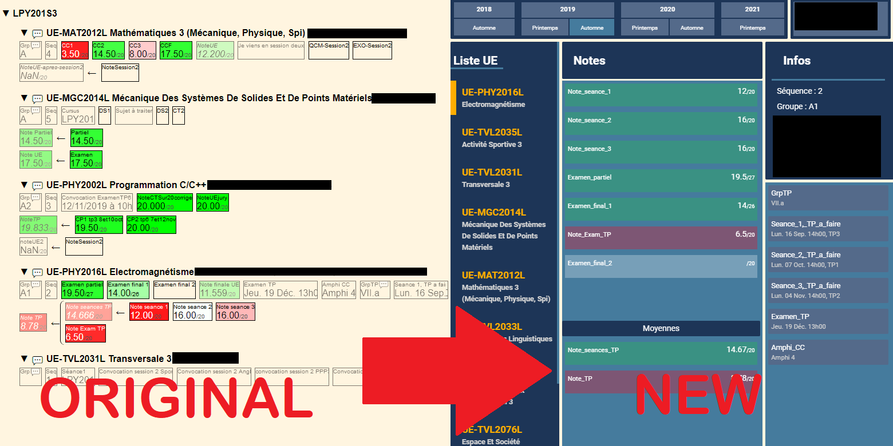

ProTomuss
Context
The official website allowing to consult the university grades is not very visually attractive. In an effort to improve the interface and to learn new technologies, I decided to develop a desktop application that would allow you to consult your grades directly on Windows without using a browser.
Description
The application provides access to university grades on an attractive graphical interface and directly from the windows desktop. The grades, displayed on the official website as raw data, are here displayed and classified by subject as well as information on course leaders, class groups or practical work. The application is inspired by the reference application for high schools: pronote.
Technique (front-end)
The Electron framework was used for this project because it allows to create desktop applications with the web languages HTML, CSS, JavaScript. This choice is relevant because it is very easy with these languages to obtain a modern graphical interface and this is the goal of the project.
Technique (back-end)
The data on the site is not easily available (there is no API). So I had to use a python script and retrieve the data one by one. To do this, the script simulates the user's actions by making http requests. This proved to be complicated because the official website is generated entirely in javascript and has anti-bot protections. So we had to bypass these restrictions to get the data.
Comparison
You can see the front part of the site and the application. The interface is more modern and well organized

Limitations
The official website is constantly evolving and since the Covid pandemic many new features for online courses have appeared. These features depend on the university's servers and it is therefore not possible to implement them in the application.